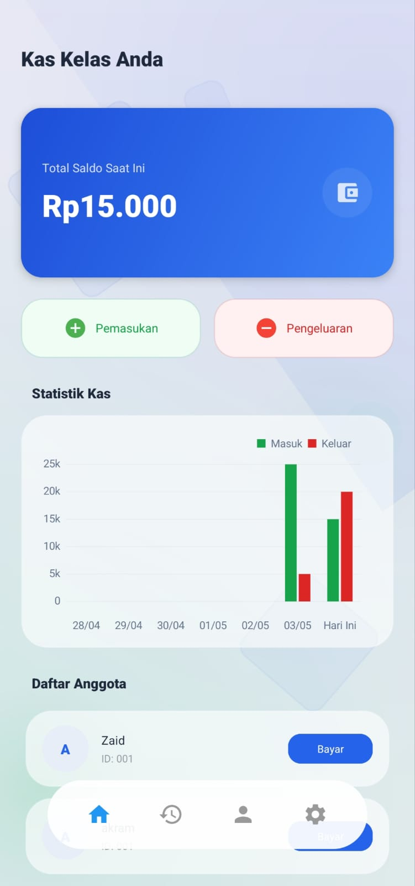
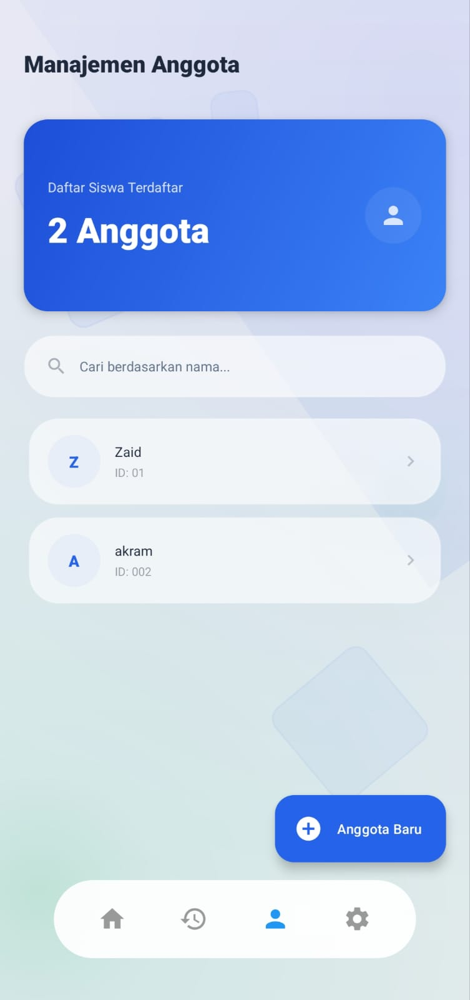

Panduan Penggunaan Sistem Manajemen Keuangan Kelas Digital Versi 1.0.0
KasKelas adalah solusi digital yang dirancang untuk memodernisasi tata kelola administrasi keuangan di lingkungan pendidikan. Dengan integrasi teknologi database lokal dan visualisasi data, aplikasi ini memberikan transparansi penuh bagi seluruh anggota organisasi.
Panduan ini akan membimbing Anda melalui setiap fitur utama untuk memastikan pemanfaatan aplikasi secara maksimal.
Layar utama memberikan ringkasan instan tentang kondisi keuangan Anda. Terdapat tiga metrik utama:
Grafik analitik di bagian bawah menampilkan tren arus kas untuk membantu perencanaan anggaran masa depan.


Fitur ini memungkinkan Bendahara untuk mengelola database siswa dengan akurat. Anda dapat:
Mulailah dengan memasukkan daftar anggota kelas melalui menu Anggota. Pastikan setiap nama sesuai dengan absen resmi untuk memudahkan pelaporan.
Setiap kali anggota membayar iuran, catat transaksi tersebut melalui menu Pemasukan. Sistem akan secara otomatis memperbarui saldo pada dasbor.
Gunakan menu Pengeluaran untuk mencatat setiap penggunaan dana. Sertakan keterangan yang jelas untuk menjaga transparansi keuangan.
Tidak. KasKelas menggunakan Room Database yang menyimpan seluruh data secara lokal di perangkat Anda. Koneksi internet tidak diperlukan untuk operasional harian.
Untuk saat ini, cadangan data dapat dilakukan dengan menyalin file database aplikasi atau menunggu fitur Sinkronisasi Cloud pada pembaruan mendatang.